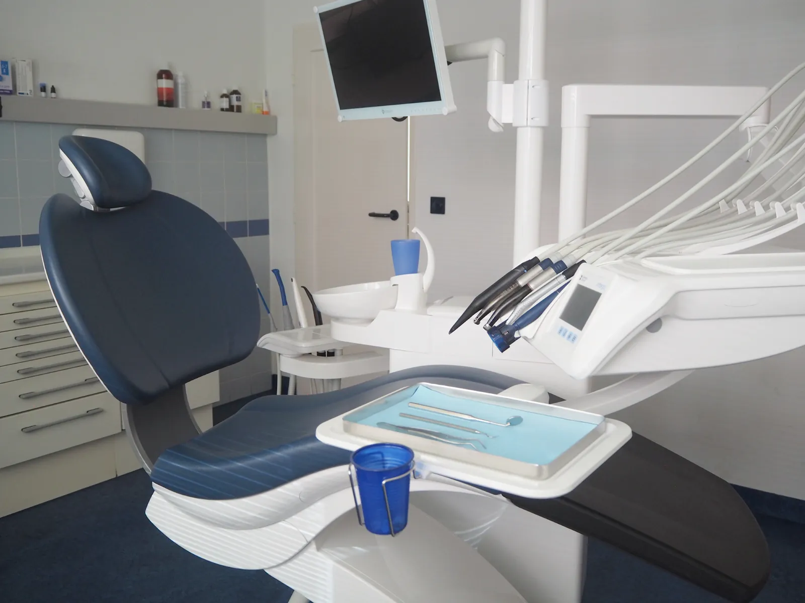
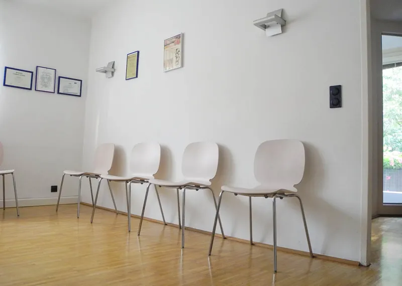
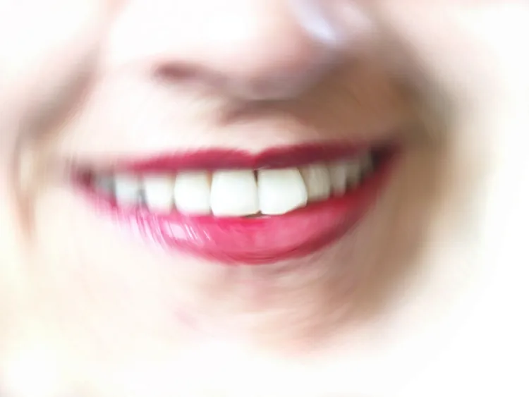
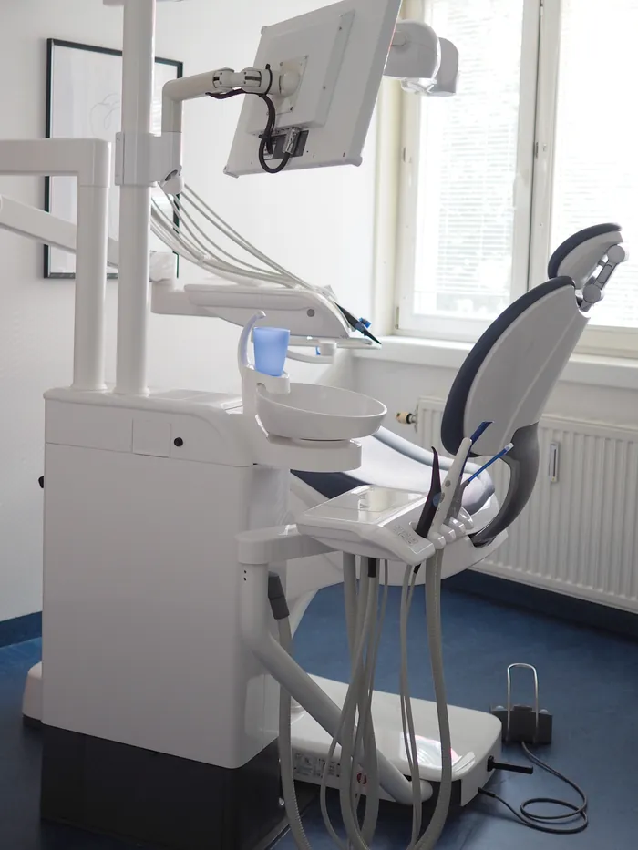
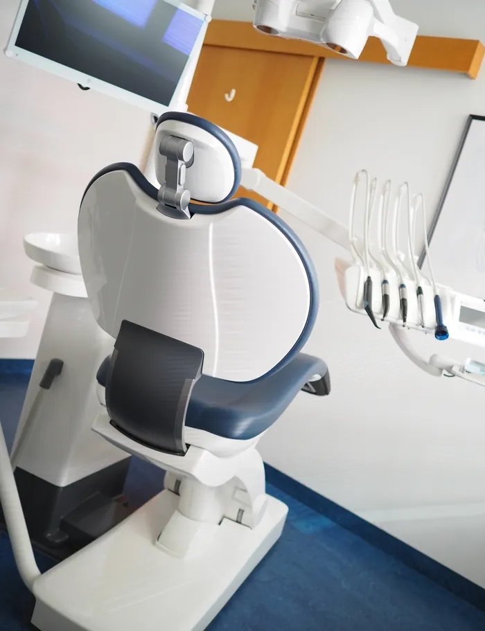
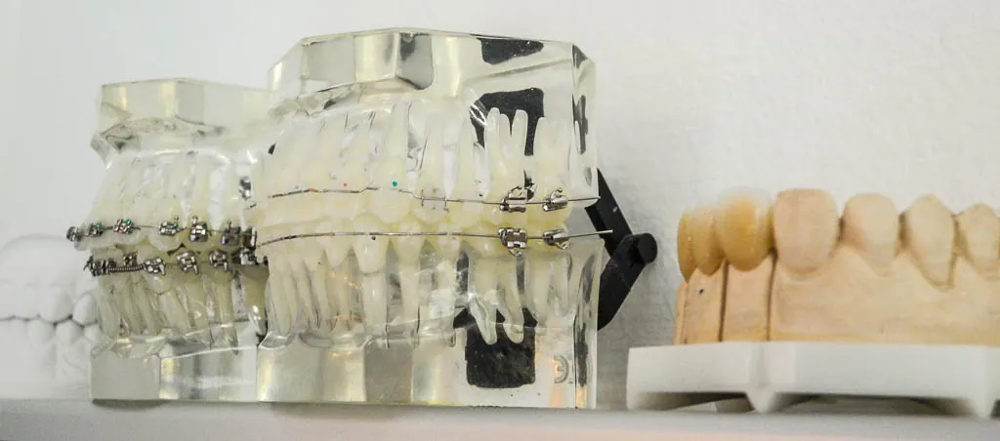
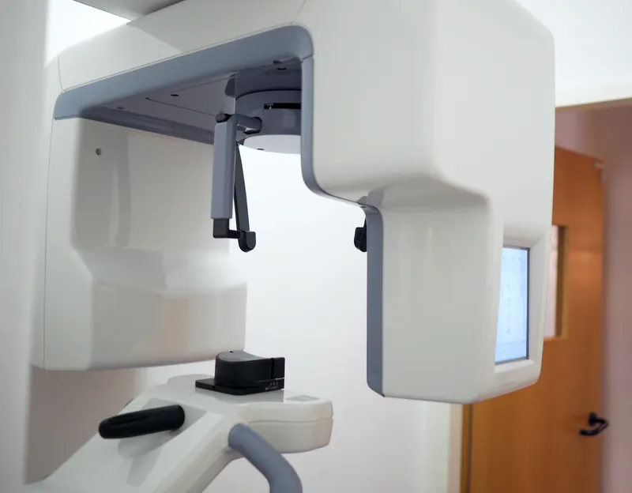
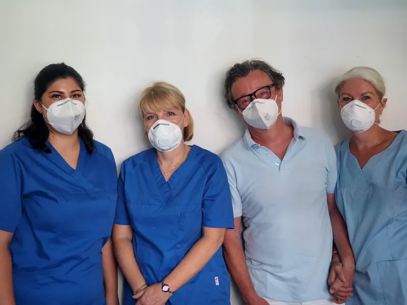

Zähne erhalten – ein Leben lang.
Termin vereinbaren
Prophylaxe, Füllungen, Zahnersatz, Implantologie und Kieferorthopädie – für Kinder und Erwachsene. Alle Kassen & Privat.
Mo 11–19 · Di & Mi 10–18 · Do 8:30–14 Uhr

Alle Kassen & Privat Digitales Röntgen Kieferorthopädie für Kinder & Erwachsene Seit 1997 in der Brigittenau
Moderne Ordination29 JahreJubiläum im Oktober 2026 – danke für Ihr Vertrauen!
Warum Patienten uns vertrauen
Oberstes Ziel unserer Ordination ist die Zahnerhaltung. Von der Vorsorge über Füllungen und Zahnersatz bis zur Kieferorthopädie – alles unter einem Dach.
Dr. Roman Münzker und sein Team betreuen Kinder und Erwachsene persönlich – seit 1997 in der Dresdner Straße.
Alles für Ihre Zähne unter einem Dach
Von der professionellen Zahnreinigung bis zum Implantat: Wir beraten Sie zu allen Möglichkeiten – als Kassen- oder Privatleistung.

Prophylaxe & Mundhygiene
Professionelle Zahnreinigung gegen Karies und Parodontitis – je nach Risiko alle 6–12 Monate.

Chirurgie & Implantologie
Implantate – auch zur Fixierung schlecht sitzender Prothesen –, Wurzelspitzenresektion und Entfernung retinierter Zähne, auch Weisheitszähne.

Füllungstherapie
Alternativen zu Amalgam – vom Glasionomer bis zum Keramikinlay.
Zahnersatz
Kronen, Brücken, Teil- und Vollprothesen – bei Bedarf implantatgetragen.

Kieferorthopädie
Festsitzende und abnehmbare Zahnspangen sowie unsichtbare Schienen („eCligner“).

Digitales Röntgen
Strahlungsarmes Kleinbild- und Panoramaröntgen direkt in der Ordination.
Sonderleistungen
- Hausbesuche
- Zahnschmuck
- Expressreparatur von Zahnersatz
- Reinigung von Zahnersatz im Ultraschallbad
Gerade Zähne in jedem Alter
Das kieferorthopädische Leistungsspektrum unserer Ordination umfasst festsitzende und abnehmbare Zahnspangen für Kinder und Erwachsene sowie die sogenannten unsichtbaren Zahnspangen („eCligner“).
Dr. Münzker hat sich dafür umfassend fortgebildet – unter anderem mit dem KFO-Fortbildungsdiplom der Österreichischen Zahnärztekammer und der „eCligner Suisse“-Zertifizierung.
01FestsitzendZahnspangen für Kinder & Erwachsene
02AbnehmbarZahnspangen für Kinder & Erwachsene
03UnsichtbarTransparente Schienen mit eCligner
Amalgam ist Geschichte. Welche Füllung passt zu Ihnen?
Seit Anfang 2025 ist die Verwendung von Amalgam für Zahnfüllungen per EU-Verordnung verboten. Als Alternative kommen diese Materialien in Frage:
Kostenfrei · ÖGK
SteinzementLangzeitprovisorium
Das einzige Füllungsmaterial, bei dem die ÖGK die vollen Kosten übernimmt. Kann aber eher nur als Langzeitprovisorium angesehen werden.
- Haltbarkeit
- ca. 6 Monate – 2 Jahre
- Kasse
- ÖGK: volle Kostenübernahme
Gibt Fluor ab
GlasionomerzementGIZ
Haltbarer als Steinzement. Gibt Fluor ab und hilft so, Sekundärkaries zu verhindern. Nicht für jede Indikation geeignet, wäscht sich aus, ist etwas rau und kann sich verfärben.
- Kasse
- Alle Kassen: Kinder bis zum vollendeten 15. Lebensjahr, Schwangere und stillende Mütter
- BVAEB & KFA
- Kostenübernahme für alle Patientinnen und Patienten
Zahnfarben
CompositeZahnfarbene Kunststofffüllung
Das beste und haltbarste plastische Füllungsmaterial – für alle Indikationen geeignet. Die Verarbeitung ist aufwändig: Trockenlegung, Konditionierung des Zahnes, schichtweise Aushärtung.
- Frontzähne
- Eckzahn bis Eckzahn: von allen Kassen bezahlt
- Seitenzähne
- Privatleistung für alle gesetzlich Krankenversicherten
Beste Versorgung
Gold- & KeramikinlaysLaborgefertigt
Die beste Versorgungsmöglichkeit kariöser Läsionen im Seitenzahnbereich – passgenau im Labor gefertigt.
- Ablauf
- Zahn wird präpariert → Abformung → Zahntechniker:in fertigt das Formteil im Labor am Gipsmodell → Einsetzen (zementiert oder geklebt)
Welche Lösung für Ihren Zahn sinnvoll ist, besprechen wir gerne persönlich mit Ihnen in der Ordination.
Oberstes Ziel unserer Ordination ist die Zahnerhaltung – mit 29 Jahren Erfahrung, digitaler Diagnostik und persönlicher Betreuung für Kinder und Erwachsene.
Hell, freundlich und modern
Ein Blick in unsere Räume in der Dresdner Straße: Behandlungszimmer, Wartebereich und eine eigene Spielecke für unsere jüngsten Patientinnen und Patienten.
Ein digitales und damit strahlungsarmes Kleinbild- und Panoramaröntgen steht direkt in der Ordination zur Verfügung.
Unser Team
Seit 1997 führt Dr. Roman Münzker seine Ordination in der Brigittenau. Neben der allgemeinen Zahnheilkunde hat er sich laufend in Implantologie und Kieferorthopädie weitergebildet.
Werdegang
Promotion zum Doktor der gesamten Heilkunde
Ausbildung zum Facharzt für Zahn-, Mund- & Kieferheilkunde
Anstellung im Zahnambulatorium Floridsdorf der WGKK
Gründung der Ordination
Implantologiekurs, Medos Austria
KFO-Kurs nach Prof. Richter
KFO-Fortbildungsdiplom der Österreichischen Zahnärztekammer
Ausbildung zum Kieferorthopäden nach POS („Progressive Orthodontic Seminars“)
„eCligner Suisse“-Zertifizierung
29 Jahre Ordination Dr. Münzker

So läuft Ihr Besuch ab
Vom ersten Anruf bis zur Vorsorge: Wir nehmen uns Zeit, erklären jeden Schritt und besprechen Kassen- und Privatleistungen offen mit Ihnen.
- 1.Termin vereinbaren
Termine vergeben wir nach telefonischer Vereinbarung unter 01 332 75 09.
- 2.Untersuchung
Kontrolle von Zähnen und Zahnfleisch – bei Bedarf mit digitalem, strahlungsarmem Röntgen.
- 3.Beratung & Plan
Wir erklären die Möglichkeiten und was Ihre Kasse übernimmt.
- 4.Behandlung & Vorsorge
Behandlung nach Plan und regelmäßige Prophylaxe – je nach Risiko alle 6–12 Monate.
Wir freuen uns auf Ihren Besuch
Termine nach telefonischer Vereinbarung – rufen Sie uns während der Ordinationszeiten an. Wir behandeln Patientinnen und Patienten aller Kassen sowie privat.
Termin vereinbaren
01 332 75 09AdresseOrdination Dr. Roman Münzker
Dresdner Straße 48/3/4
1200 Wien
Dresdner Straße 48/3/4
1200 Wien
VersicherungAlle Kassen & Privat
Ordinationszeiten
Termin nach telefonischer Vereinbarung
| Montag | 11:00 – 19:00 |
|---|---|
| Dienstag | 10:00 – 18:00 |
| Mittwoch | 10:00 – 18:00 |
| Donnerstag | 08:30 – 14:00 |
| Freitag – Sonntag | geschlossen |
Termin nach telefonischer Vereinbarung.
Mit den Öffis
- U6Dresdner StraßeU-Bahn
- 2Dresdner StraßeStraßenbahn
- 31HöchstädtplatzStraßenbahn
- 33HöchstädtplatzStraßenbahn
- 37ADresdner StraßeBus
Dresdner Straße 48/3/4, 1200 Wien
Zum Schutz Ihrer Daten wird die Karte erst nach Klick geladen. Dabei werden Daten an OpenStreetMap übertragen.
Ihr nächster Termin ist nur einen Anruf entfernt
Mo 11–19 · Di & Mi 10–18 · Do 8:30–14 Uhr